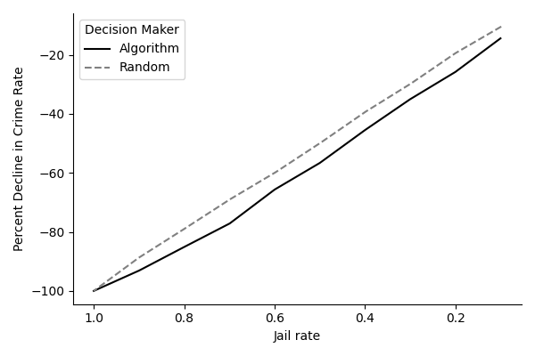

Exercise Class 9
Recall last week’s exercise class. This week we will try to create a variation of the contraction curve based on a simplified simulated dataset akin to Kleinberg et al. (2018). The simulated data is stored in the csv crime.csv which can be downloaded here or at Absalon here.
Printing out an overview of the data shows:
import polars as pl
df = pl.read_csv("data/crime.csv")
print(df)shape: (50_000, 6)
┌───────────┬───────────────┬─────┬─────────┬──────┬───────┐
│ PriorFTAs ┆ FelonyArrests ┆ Age ┆ Release ┆ FTA ┆ ID │
│ --- ┆ --- ┆ --- ┆ --- ┆ --- ┆ --- │
│ i64 ┆ i64 ┆ i64 ┆ i64 ┆ i8 ┆ u32 │
╞═══════════╪═══════════════╪═════╪═════════╪══════╪═══════╡
│ 1 ┆ 3 ┆ 21 ┆ 0 ┆ null ┆ 0 │
│ 1 ┆ 3 ┆ 20 ┆ 1 ┆ 0 ┆ 1 │
│ 3 ┆ 1 ┆ 23 ┆ 1 ┆ 0 ┆ 2 │
│ 3 ┆ 2 ┆ 18 ┆ 1 ┆ 0 ┆ 3 │
│ 3 ┆ 3 ┆ 19 ┆ 0 ┆ null ┆ 4 │
│ … ┆ … ┆ … ┆ … ┆ … ┆ … │
│ 4 ┆ 3 ┆ 33 ┆ 0 ┆ null ┆ 49995 │
│ 5 ┆ 3 ┆ 35 ┆ 1 ┆ 0 ┆ 49996 │
│ 2 ┆ 3 ┆ 34 ┆ 1 ┆ 0 ┆ 49997 │
│ 1 ┆ 3 ┆ 38 ┆ 0 ┆ null ┆ 49998 │
│ 4 ┆ 3 ┆ 46 ┆ 1 ┆ 0 ┆ 49999 │
└───────────┴───────────────┴─────┴─────────┴──────┴───────┘The data consists of \(50,000\) rows and \(6\) columns:
PriorFTAs: Number of prior failures to appear (FTA) for the individual.FelonyArrests: Number of prior felony arrests.Age: Age of the individual (in years).Release: Indicator for whether the individual was released pretrial (1) or detained (0).FTA: Outcome variable — whether the individual failed to appear in court (1= failed to appear,0= appeared,null= missing).ID: Unique identifier for each individual (ranging from 0 to 49,999).
Exercise 1 - Contraction curve
Download the data and place it in some folder in your project directory e.g.
data/. The data can then be loaded using for instancepolarsand the snippet provided above.Tip: the data can be downloaded directly to the
data/folder usingwgetas follows:wget -P data/ https://gist.githubusercontent.com/jsr-p/db713b7779f30e205ea93ac93e542a9d/raw/2661cd31ac85ffdae392e2d54483c49eb88ee047/crime.csvwhich you can copy, paste and run in your shell.
Split the data into train and test sets using train_test_split. Set
test_size=0.2andrandom_state=42.Estimate a simple Logistic Regression model from sklearn i.e. use
model = LogisticRegression(). The features should be["PriorFTA", "FelonyArrests", "Age"]and the outcome"FTA". Before estimating the model you should create a boolean array and select all entries in the training data where"FTA"is not null.Compute the risk score defined as the predicted probability of
FTAbeing equal to1; use thepredict_probamethod of the estimated model object. with the simulated dataset.Assign the predicted risk score to a dataframe consisting of all the individuals in the test set.
Subset the above-mentioned dataframe to only include individuals where “FTA” is not null. Then partition the individuals into 10 quantile bins based on the assigned risk score. Name the quantile groups
Q1, Q2, ..., Q10corresponding to the 10% individuals with lowest risk etc. Call this new column with the quantile groups forbin.Tip:
Starting from the highest quantile group (i.e. with highest risk of committing a crime), loop through each quantile group and select all individuals in the given quantile group or higher.
Then do the following:
- Based on the model prediction we jail all individuals with a risk score in group
labor higher. Concretely, construct a columnJailedequal to1for all individuals inlabor higher; otherwise it should equal 0. - For those individuals with
Jailedequal to1set the outcomeFTAequal to0(jailed individuals cannot commit a crime). - Finally, compute the jail rate (average
Jailed) and the crime rate (averageFTA). - Save the results in a list
After the loop construct a dataframe with the jail and crime rate from each iteration of the loop above.
Hint: The loop should go as:
for lab in ["Q10", "Q9", "Q8", "Q7", "Q6", "Q5", "Q4", "Q3", "Q2", "Q1"]: # ... insert code here- Based on the model prediction we jail all individuals with a risk score in group
Do the same as above but now instead of using a partition of the individuals based on the model prediction, use a random partition of the individuals. This corresponds to just selecting a random individual to jail instead of the one with the highest model risk.
Hint: One way to do this is to use
numpy.random.randintto draw a random integer from 1 to 10 for each individual.Concatenate the dataframes from
7.and8.into one dataframe. Make a column to distinguish between the algorithm (results from7.) and the random decision (results from8.).Compute the crime rate for the test set. Denote this as the baseline crime rate. Then compute the relative decrease in crime using the dataframe from
9.and the baseline crime rate. Do this for the algorithm and the random decision. Plot the curves using matplotlib. Interpret the figure.You should get results similar to:

Note: This is a slightly different contraction curve than the one of Kleinberg et. al. 2018. However, the idea is basically the same.
Optional: Exercise 2 - Exam project workshop
Spend some time discussing ideas or your idea related to the exam project. See the announcement on Absalon for more details. You are welcome to discuss with your fellow students (and TA).